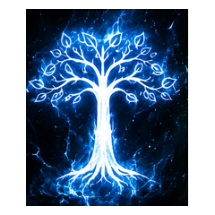
TORNEO ÉPICO · TEAM WILLIAM26/09/2026 · 3vs3
Team William
🥇 Campeones · William · Checho · Denis
🥈 Segundo · Team Zero
🥉 Tercero · Team Rice
Bienvenidos a la comunidad latina de BFME II. Encontrá instalación, juego online, guías de facciones y héroes, estrategias, torneos, resultados y todos nuestros canales en un solo lugar.
Todos los caminos de la comunidad en un solo lugar. Elegí dónde querés unirte y seguinos en nuestras redes.
Guías de la comunidad cargadas desde el material de Discord. Tocá cada tarjeta para desplegar el contenido.
Stacking, cancelación, liderazgo, buffs de armadura, daño, velocidad y alcance.
La guía también incluye interacciones especiales como Furia Poderosa, Carga Gloriosa y Doncella Escudera.
Cómo presionar al rival desde las primeras fases y aprovechar el control del mapa.
Atacar edificios económicos o de producción durante las primeras fases del juego para distraer, debilitar la economía y ralentizar la producción enemiga.
Puntos claveTipos de armadura, resistencias y formas de contrarrestar héroes en BFME2.
El documento indica que la armadura no es el único factor: también influyen salud, habilidades, velocidad, apoyo y poderes.
Fichas detalladas de héroes con coste, puntos de mando, vida, daño, habilidades y consejos.
Gorkil, Ella-Laraña, Drogoth, Lurtz, Sharku, Gríma, Saruman, Glóin, Dáin, Gimli, Arwen, Haldir, Glorfindel, Legolas, Thranduil, Elrond, Théoden, Éomer, Éowyn, Aragorn y otros héroes desarrollados en la guía.
Cada ficha conserva la información proporcionada por la comunidad sobre habilidades, niveles, roles, estadísticas y sinergias.
Introducciones y estrategias de Trasgos, Isengard, Enanos, Elfos y Hombres, con sus héroes.
Instalación del launcher, archivos necesarios y preparación para jugar online.
Al entrar al servidor, hacé clic en el engranaje de configuración junto al nombre del servidor y activá Mostrar todos los canales. Así aparecerá el canal DESCARGAS.
Paso 2 — Descargar los archivosEntrá a DESCARGAS y descargá: Launcher Todo en Uno de BFME II, Radmin VPN y los datos de la red para jugar online.
Paso 3 — Mirar el video de instalaciónUna vez descargado todo, seguí el video paso a paso sin saltear ningún punto para evitar errores.
¿Tenés problemas?Si algo no funciona o tenés dudas, consultá en 📍・𝚌𝚑𝚊𝚝-𝚐𝚎𝚗𝚎𝚛𝚊𝚕. Siempre habrá alguien de la comunidad para darte una mano.
El material original queda como base para seguir incorporando contenido, imágenes y nuevas secciones.
Esta biblioteca se irá ampliando con las guías que me pases. Podemos convertir cada tema en una sección visual propia con imágenes, tablas, héroes, counters y estrategias.
Fuente: material de guías proporcionado por la comunidad.Hay dos opciones de instalación para la comunidad. Elegí la que corresponda a tu caso.
La opción principal para instalar BFME II con el Launcher Todo en Uno.
En Discord, abrí el engranaje junto al nombre del servidor y activá Mostrar todos los canales para que aparezca DESCARGAS.
Paso 2 — Descargar archivosDesde DESCARGAS, descargá el Launcher Todo en Uno de BFME II, Radmin VPN y los datos de la red.
Paso 3 — Video de instalaciónSeguí el video completo sin saltear pasos.
Si tenés problemas, consultá en 📍・𝚌𝚑𝚊𝚝-𝚐𝚎𝚗𝚎𝚛𝚊𝚕.
Instalación del BFME II mediante ISO 3 en 1 y aplicación del parche 1.09 v3.1. Esta opción es exclusivamente para BFME II.
Configuración de red para jugar online con la comunidad, después de completar cualquiera de las opciones.
Radmin VPN oficial:radmin-vpn.com
Red privada → Unirse:
Después: BFME II → Multijugador → Red local (LAN) → crear o unirse a una partida.
Nota: usar el mismo nombre que en BFME II. La guía indica que nombres como DESKTOP, usuarios duplicados o apodos como “no me patees” se eliminan regularmente.
Elegí una facción para abrir su sección de héroes, información y estrategias. Cada facción tiene su emblema correspondiente.
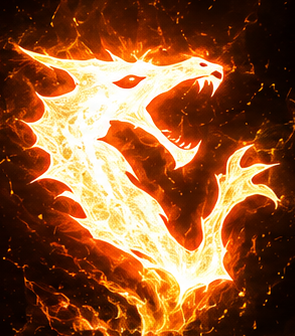
Movilidad, presión, túneles y monstruos.
Gorkil · Ella-Laraña · Drogoth
Uruks, Wargs, economía agresiva y mejoras.
Lurtz · Sharku · Gríma · Saruman
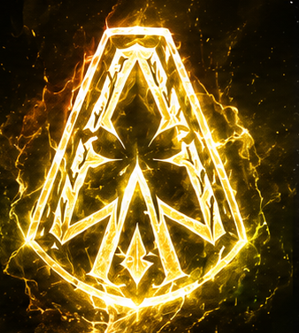
Infantería pesada, economía y máquinas de asedio.
Glóin · Dáin Pie de Hierro · Gimli
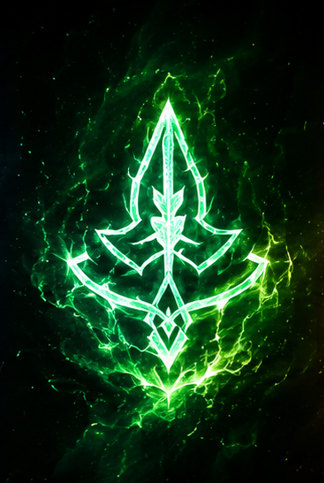
Precisión, arqueros, movilidad y control del mapa.
Arwen · Haldir · Glorfindel · Legolas · Thranduil · Elrond
Infantería, arqueros, caballería y liderazgo.
Boromir · Théoden · Faramir · Éomer · Éowyn · Aragorn · Gandalf
Presión, terror, monstruos y héroes de gran impacto.
Nazgûl · Boca de Sauron · Nazgûl en Bestia Alada · Rey Brujo
Movilidad, presión, túneles y monstruos. Acá podés consultar a los héroes de la facción.
Los Trasgos se apoyan en movilidad, presión constante, túneles y monstruos. Su estilo premia el hostigamiento, el control del mapa y el uso combinado de unidades rápidas y criaturas.
Héroes: Gorkil · Ella-Laraña · Drogoth
Uruks, Wargs, economía agresiva y mejoras. Esta sección reúne a los héroes de Isengard con sus imágenes.
Isengard se apoya en Uruks, Wargs, economía agresiva y mejoras para ejercer presión constante sobre el rival.
Héroes: Lurtz · Sharku · Gríma Lengua de Serpiente · Saruman
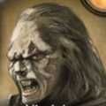
Coste: 1100 · CP: 40 · Salud: 2400 · Cuerpo a cuerpo: 170 · Distancia: 150
Puede cambiar entre arco y espada.
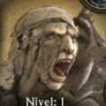
Coste: 1500 · CP: 60 · Salud: 2350 · Daño: 250
Siempre montado · Caza de Sangre · Devorahombres · Convocar Huargos de Isengard.
Coste: 1800 · CP: 60 · Salud: 2800 · Cuerpo a cuerpo: 110 · Distancia: 1500
Palabras Ponzoñosas · Huida · Puñalada · Debilitar Alianza.
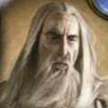
Coste: 3000 · CP: 80 · Salud: 3000 · Daño: 250
Aura de Saruman · Estallido de Mago · Bola de Fuego · Oratoria · Tormenta de Rayos · Dominación.
Infantería pesada, economía y máquinas de asedio.
Los Enanos se caracterizan por su infantería pesada, economía y máquinas de asedio.
Héroes: Glóin · Dáin Pie de Hierro · Gimli
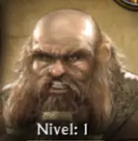
Coste 1100 · CP 40 · Salud 2400 · Daño 300
Habilidades: Embestida · Neutralizar Edificio · Martillo Despedazador
Consejos: Consejos de asedio y sinergias.
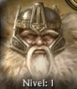
Coste 1800 · CP 60 · Salud 2700 · Daño 325
Habilidades: Montar/desmontar desde nivel 8 · Presencia Inspiradora · Furia Poderosa · Orgullo Obstinado · Montar/Desmontar · Convocar Guardia Real
Consejos: Todos los consejos estratégicos.
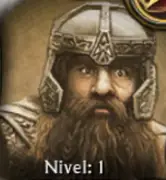
Coste 3000 · CP 80 · Salud 3600 · Daño 450
Habilidades: Liderazgo · Lanzamiento de Hacha · Ataque con Salto · Exterminador
Consejos: Consejos completos.
Precisión, arqueros, movilidad y control del mapa.
Los Elfos se especializan en precisión, arqueros, movilidad y control del mapa.
Héroes: Arwen · Haldir · Glorfindel · Legolas · Thranduil · Elrond
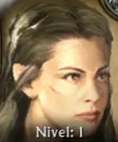
Coste 1100 · CP 40 · Salud 2000 · Daño 180
Habilidades: Montar/desmontar · Presencia Inspiradora · Inundación · Athelas · Cantidad de caballos por nivel
Consejos: Consejos y sinergias.
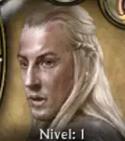
Coste 1100 · CP 40 · Salud 2200 · Distancia 135 · Cuerpo a cuerpo 265
Habilidades: Arma alternativa · Liderazgo · Flecha Dorada
Consejos: Consejos completos.
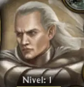
Coste 2000 · CP 60 · Salud 3000 · Daño 150
Habilidades: Montar/desmontar · Acero de Pureza · Jinete del Viento · Luz Estelar · Curación, resurrección, buffs y terror
Consejos: Consejos completos.
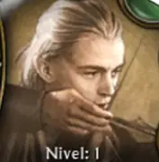
Coste 2000 · CP 60 · Salud 1800 · Distancia 100 · Cuerpo a cuerpo 200
Habilidades: Ataque de Halcón · Entrena Arqueros · Luchador con Cuchillo · Flecha de Viento
Consejos: Consejos completos.
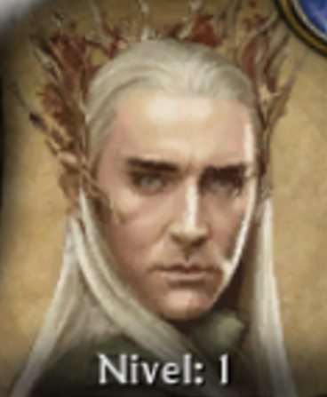
Coste 3000 · CP 80 · Salud 2450 · Distancia 400 · Cuerpo a cuerpo 200
Habilidades: Rey del Bosque Negro · Montar/desmontar · Ojo Muerto · Caminata Salvaje · Movimiento Invisible · Espina de Venganza
Consejos: Consejos completos.
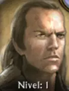
Coste 3000 · CP 80 · Salud 3350 · Daño 200
Habilidades: Athelas · Presencia Inspiradora · Vista Lejana · Remolino · Restauración · Todos los efectos por nivel
Consejos: Todos los efectos por nivel y consejos completos.
Infantería, arqueros, caballería y liderazgo.
Los Hombres combinan infantería, arqueros, caballería y héroes de liderazgo. La facción permite adaptar el ejército según el rival y aprovechar bonificaciones de liderazgo y unidades especializadas.
Héroes: Boromir · Théoden · Faramir · Éomer · Éowyn · Aragorn · Gandalf
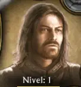
Coste 1100 · Vida muy alta · Velocidad 50 → 53,5 nivel 7
Habilidades: Cuerno de Gondor · Liderazgo · Liderazgo mejorado · Cambios específicos del parche 1.09v3
Consejos: Consejos y sinergias.
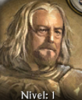
Coste 1100 · CP 40 · Vida 2600 · Daño 120
Habilidades: Montar/desmontar · Presencia Inspiradora · Favor del Rey · Carga Gloriosa
Consejos: Consejos completos.
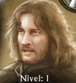
Coste 1500 · CP 60 · Vida 2250 · Cuerpo a cuerpo 190 · Distancia 165
Habilidades: Cambio de arma · Flecha Hiriente · Montura · Inspiración a los Arqueros · Liderazgo de Faramir
Consejos: Consejos completos.
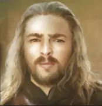
Coste 1500 · CP 60 · Salud 3200 · Cuerpo a cuerpo 150 · Lanza 380
Habilidades: Arrojar Lanza · Señor de los Caballos · Liderazgo de Desterrado
Consejos: Sinergias con Rohirrim, Éowyn y Théoden.
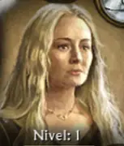
Coste 1500 · CP 60 · Salud 2800 · Cuerpo a cuerpo 165 · Lanza 445
Habilidades: Castigo · Disfraz · Doncella Guerrera · Defensa Heroica · Multiplicadores contra voladores y héroes
Consejos: Consejos y sinergias.
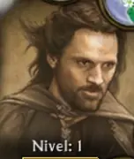
Coste 3000 · CP 80 · Salud 3500 · Daño 312
Habilidades: Athelas · Espada Maestra · Presencia Inspiradora · Andúril · Elendil · Ejército de los Muertos
Consejos: Estrategia y sinergias.
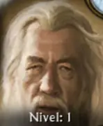
Coste 5000 · CP 100 · Salud 4300 · Daño 300
Habilidades: Estallido de Mago · Espada Relámpago · Montar/desmontar · Luz de los Istari · Palabra de Poder · Gandalf el Blanco nivel 5 · Burbuja Escudo · Cambios contra Balrog y Legolas
Consejos: Estrategia y sinergias.
Nazgûl, Boca de Sauron, criaturas voladoras y Rey Brujo.
Mordor utiliza héroes oscuros, criaturas monstruosas y Nazgûl para hostigar, controlar y presionar al enemigo.
Héroes: Nazgûl · Boca de Sauron · Nazgûl en Bestia Alada · Rey Brujo
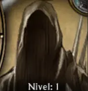
Coste inicial 1100 · Revivir ~700 · Salud 1710 · Daño 150 → 300 en 1.09v3 · CP 40 · Montar/desmontar desde nivel 1
Habilidades: Nivel 2 — Faz Aterradora · Nivel 6 — Acero de Morgul · Nivel 10 — Chillido · Cambios 1.09v3: daño cuerpo a cuerpo duplicado, embestida mejorada, menor daño a estructuras, revivir más barato, más experiencia para subir
Consejos: Hostigar · combinar 2–3 Nazgûl · protegerlos en early · evitar lanzas y concentraciones de arqueros.
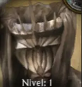
Coste 1600 · Salud 2800 · Daño cuerpo a cuerpo 320 · Daño de habilidad 1440 · CP 60
Habilidades: Ojo Malvado · Duda · Disensión · Debuffs completos
Consejos: Consejos de control y debilitamiento.
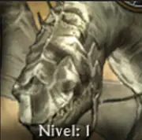
Coste 3000 · CP 80 · Salud 7000 · Cuerpo a cuerpo 400 · Daño de área 500 · No puede desmontarse
Habilidades: Chillido · Mejora de daño en nivel 6
Consejos: Consejos contra arqueros, torres y spam.
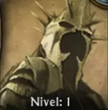
Coste 5000 · CP 100 · Salud 6700 · Daño cuerpo a cuerpo 600 · Montado o a pie
Habilidades: Faz Aterradora · Chillido · Espada de Morgul · Hora del Rey Brujo · Debuffs
Consejos: Consejos y combinaciones con trolls, lanzas y Tamborilero.
Una biblioteca para consultar cada héroe con imagen, coste, puntos de mando, vida, daño, habilidades por nivel, rol, consejos y counters.
Diseñadas para incorporar las estadísticas y explicaciones de tus guías.
Sección para reunir respuestas y recomendaciones de las guías de la comunidad.
Consejos de uso, sinergias y momentos adecuados para cada héroe.
Un acceso rápido a todos los recursos que actualmente están en Discord.
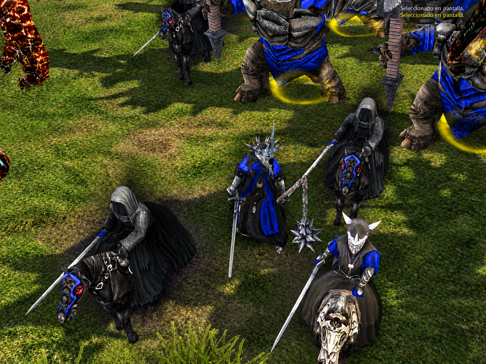
Archivos y pasos de instalación.
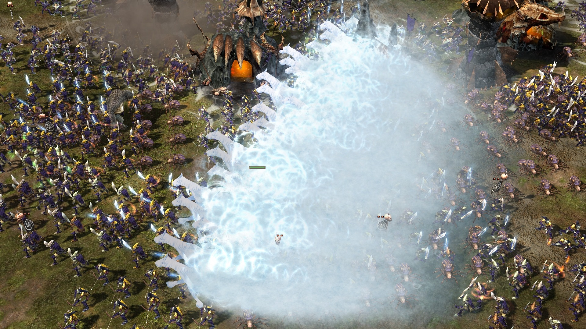
Información y configuración del parche.
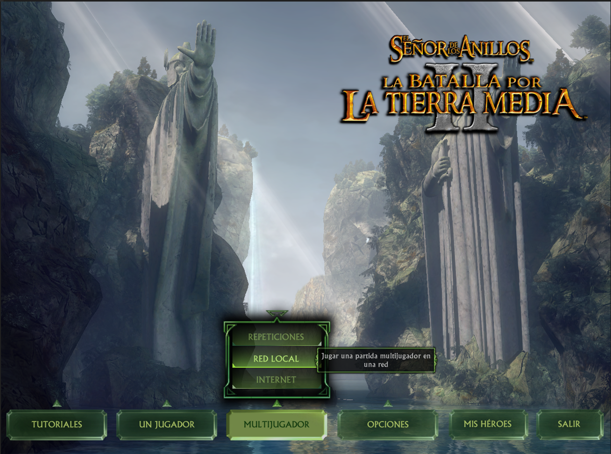
Guía y archivos relacionados con el launcher.
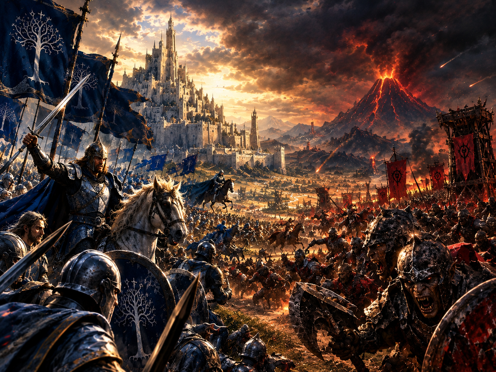
Configuración para jugar con la comunidad.
Un espacio para publicar próximos torneos, resultados, campeones, llaves y anuncios de la comunidad.
Preparado para fechas, reglas, participantes y resultados.
Preparado para llaves y resultados.
Preparado para publicar equipos, posiciones y campeones.
Preparado para las llaves épicas de la comunidad.
Galería de las imágenes de campeonato que pasaste. Las fechas y equipos se mantienen separados cuando una imagen corresponde a otro torneo del historial.
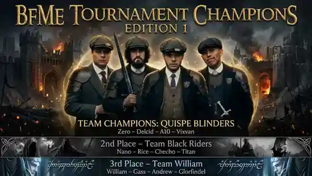
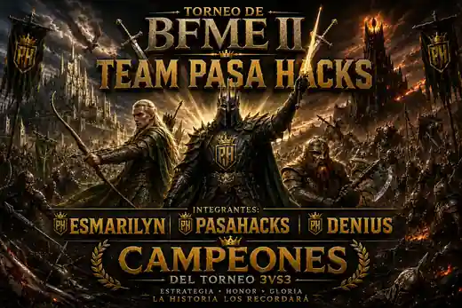
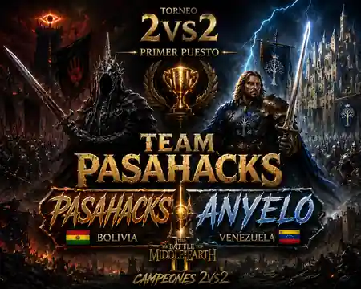
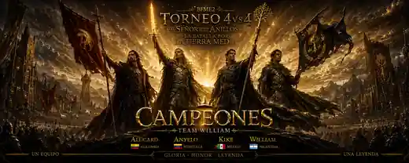
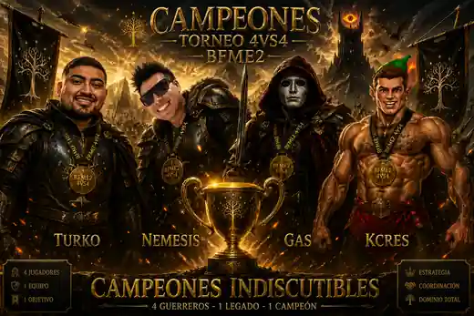
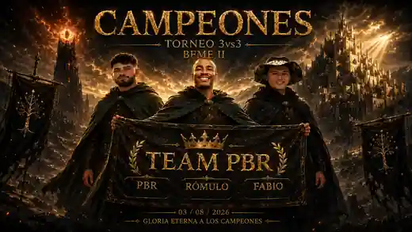
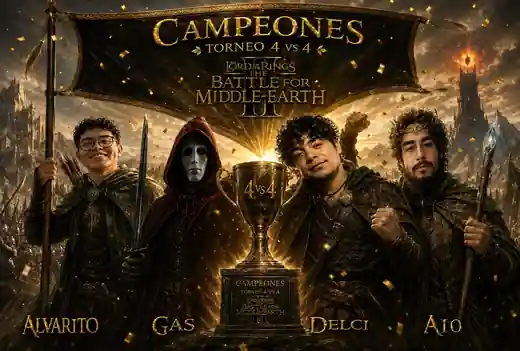
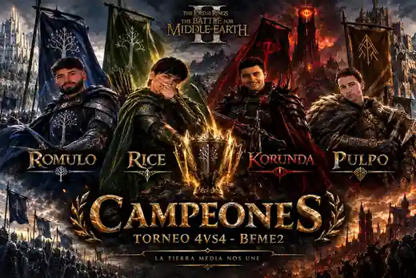
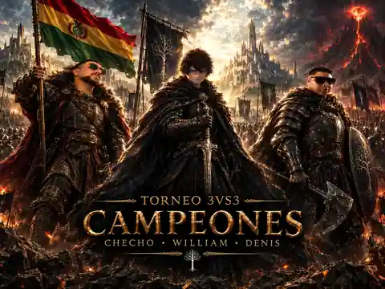
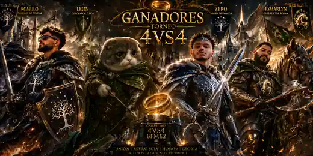
La portada funciona como punto de entrada para cualquier jugador que descubra la comunidad desde una red social.
La historia de los torneos de la comunidad, organizada por modalidad y fecha. Cada campeonato tendrá su propia imagen, podio y registro histórico.

TORNEO ÉPICO · TEAM WILLIAM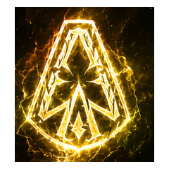
TORNEO ÉPICO · TEAM RÓMULOCada ⭐ representa un campeonato ganado.
📚 Estrategias y conocimientos
Una colección de guías para aprender matchups, héroes, buffs, debuffs, economía y control del mapa en Battle for Middle-earth II.
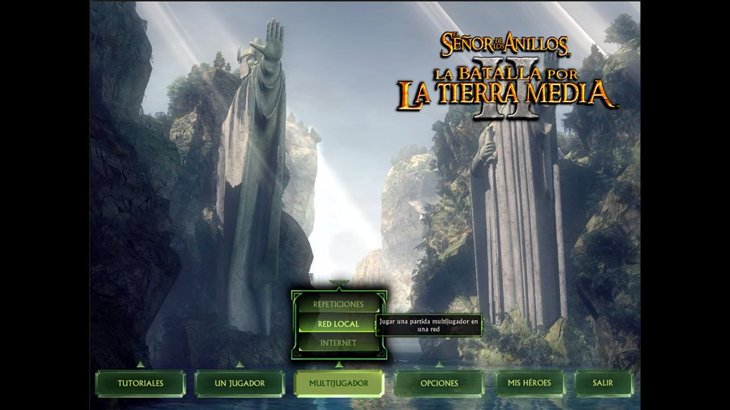
ENANOS🪨 Sistema básico de counters
🗡️ Espadachines > Picas
🛡️ Picas > Jinetes
🐎 Jinetes > Arqueros
🏹 Arqueros > Espadachines
🔥 Matchups adicionales: Espadachines > Lanzadores de hachas / Lanceros > Picas / Arqueros · Espadachines < Ents < Picas / Fuego · Espadachines > Monstruos > Picas + Arqueros nivel 2.
🎯 La posición puede cambiar completamente un enfrentamiento. 🛡️ También importan armadura, daño, resistencias, bonificaciones y penalizaciones.
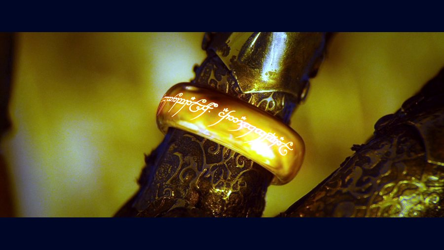
ELFOS🟢 Buffs mejoran armadura, daño, velocidad, experiencia o alcance. 🔴 Debuffs reducen estadísticas enemigas o cancelan buffs.
🔄 Stacking: varios efectos pueden actuar simultáneamente. ❌ Canceling: algunos efectos cancelan buffs. ☠️ Killing: algunos debuffs eliminan completamente un buff.
🛡️ Buffs de armadura: generalmente +35%. Luz Estelar de Glorfindel: +35% armadura, +150% daño. Carga de los Guardianes: +25% armadura, +125% velocidad. Liderazgo de Éomer afecta únicamente a caballería.
🧌 Tótem de Gorkil: +20 regeneración, +125% experiencia. Tambor Troll: +20 regeneración, +15% armadura, +115% experiencia.
⚔️ Liderazgo de Daño: +150% daño, +125% experiencia. Grito de Guerra: +140% daño, +110% velocidad.
🏃 Palantir: +115% velocidad. Torre de Marfil: +110% velocidad. 👁️ Farsight: +35% alcance y visión; afecta catapultas, balistas, trebuchets, infantería a distancia y caballería a distancia.
👑 Liderazgo de Alto Nivel: +25% armadura, +125% daño, +150% experiencia. 🐺 Sharku reduce la desaceleración de carga de caballería 35%.
💥 Furia Poderosa: +25% visión, +125% daño, +120% velocidad; no puede ser cancelada. Carga Gloriosa: +125% daño, armadura 99%, inmunidad al miedo/terror, Crush Deceleration 0; solo caballería y no puede cancelarse. Doncella Escudera reduce la desaceleración por carga de Rohirrim 50% y no puede cancelarse.
Reglas: dos buffs del mismo tipo no se acumulan; buffs de tipos diferentes sí pueden acumularse; algunos debuffs cancelan liderazgos.
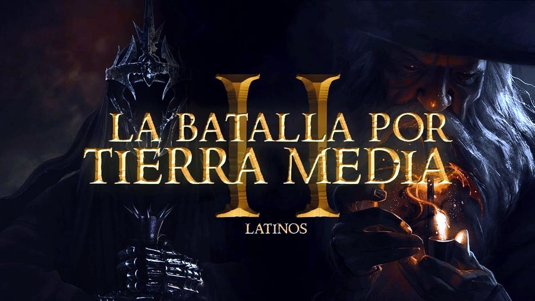
MORDOR🔻 Debuffs generales: -25% armadura y -25% daño. Ejemplos: 🌧️ Lluvia Helada · ❓ Duda — Boca de Sauron · 🌫️ Niebla Élfica.
No se acumulan entre sí; pueden cancelar buffs de armadura y daño. No afectan buffs resistentes o inmunes. Lluvia Helada cancela todo tipo de liderazgo.
🌀 Palabras Venenosas: -60% velocidad y -50% velocidad de disparo de arqueros. Hora del Rey Brujo: -75% daño en héroes y habilidades al 20% de disponibilidad.
🌧️ Lluvia Helada → cancela TODOS los liderazgos y buffs. Furia Poderosa → no puede ser cancelada. Carga Gloriosa → no puede ser cancelada. Doncella Escudera → no puede ser cancelada. Bosque Élfico → anula liderazgos de daño. Oscuridad ↔ Ruptura de Nubes → se cancelan mutuamente.
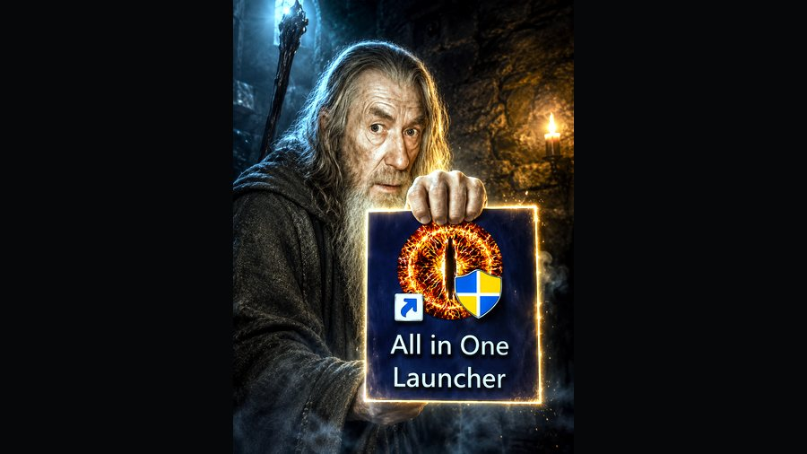
ISENGARD🛡️ Influyen armadura, salud, habilidades, velocidad, apoyo, poderes, bonificaciones e inmunidades.
Referencias: f = a pie · m = montado · Pierce = flechas normales · Cavalry_Ranged = flechas de Rohirrim, Spider Riders y Battlewagon con Hombres de Dale · Hero_Ranged = flechas de héroes · Slash = espada · Uruk = espada Uruk-Hai/Guerreros Orcos · Specialist = piqueros · Cavalry = cuerpo a cuerpo de caballería.
🛡️ Héroe Normal: Boromir, Théoden, Éowyn, Gandalf, Glóin, Glorfindel, Lurtz, Nazgûl, Gorkil, Boca de Sauron. Resistencias: Hero_Ranged 50%, Hero 50%, Structural 50%, Slash 40%, Poison 40%, Uruk 35%, Cavalry 30%, Flame 25%, Magic 20%, Pierce 18%, Cavalry_Ranged 18%, Specialist 15%. Counter recomendado: espadachines; héroes a distancia ayudan, piqueros son poco efectivos.
🪶 Héroe Ligero: Éomer, Faramir, Arwen, Legolas, Grima. Hero 75%, Magic 63%, Cavalry 60%, Hero_Ranged 50%, Structural 50%, Pierce 30%, Cavalry_Ranged 30%, Slash/Uruk 25%, Poison 25%, Specialist 10%, Flame 10%. Counters: héroes cuerpo a cuerpo, magia y caballería. Ejemplo: Gimli contra Legolas.
🛡️ Héroe Resistente: Aragorn, Gimli, Elrond, Saruman, Haldir, Rey Brujo, Ella-Laraña. Poison 75%, Hero 65%, Specialist 42%, Structural 40%, Hero_Ranged 25%, Slash/Uruk 25%, Cavalry 25%, Cavalry_Ranged 20%, Flame/Magic 17%, Pierce 15%. Counters: piqueros, héroes fuertes y veneno.
🐎 Héroe Montado: Éomer, Faramir, Arwen, Glorfindel, Nazgûl, Gorkil. Punto débil principal: Specialist 100%. Counters: piqueros, fuego y magia. Ejemplos: flechas de fuego, Sunflare, Evil Eye y dragones.
El control implica 👁️ visión, 💰 expansión económica, ⚔️ presencia militar y 🚀 despliegue rápido.
🏗️ Expande mediante edificios, especialmente estructuras económicas, para aumentar recursos, bloquear expansión enemiga, descubrir estructuras y crear posiciones estratégicas.
🛡️ Mantén tropas en movimiento, responde rápido, varía el ejército y protege bases avanzadas. Pozos, estatuas y torres ayudan a mantener posiciones.
🎯 Cuanto mayor sea tu dominio del minimapa, mayor será tu capacidad para controlar la partida.
Cuantos más edificios económicos construyes, menos produce individualmente cada uno.
🏰 En mapas grandes, demasiados edificios pueden reducir eficiencia. 🟢 Facciones malvadas: con suficientes granjas, construye aserraderos; no están afectados por la inflación. 🏰 Hombres — Gondor / Rohan: protección parcial gracias al Mercado.
🧮 Ejemplo: 24 edificios · base 25 · inflación 13 → 24 × (25 − 13) = 288 recursos.
La clave es equilibrar expansión económica y eficiencia.
Ataca edificios económicos o de producción durante las primeras etapas. Envía una unidad o pequeño grupo contra edificios desprotegidos; busca molestar, retrasar y debilitar.
🎯 Objetivos: distraer, debilitar economía, reducir producción, obligar a defenderse, retrasar expansión y conseguir control del mapa.
⚠️ Un Rush excesivo puede hacerte perder más unidades que el rival. Prepárate para contraataques y controla varios puntos del mapa.
Elegí un héroe desde su facción para abrir una ficha completa con estadísticas, rol, habilidades por nivel, estrategias, consejos y sinergias.
Héroe de soporte, liderazgo y control. Gorkil potencia tropas trasgoides, usa hechizos molestos, se monta en araña para movilidad y remate, e invoca monstruos para arrasar en el late game.
Coloca un tótem en el suelo que:
Excelente para controlar zonas clave, emboscar o resistir ofensivas.
Alterna entre modo a pie o montado en araña gigante.
Montado gana:
A pie tiene mejores buffs; montado tiene más movilidad y control.
Otorga a aliados cercanos:
Los Trolls ganan +25% de experiencia adicional.
Ideal para potenciar spam de trasgos, trolls y monstruos. Se acumula con el tótem.
Disparo especial que:
Letal para frenar héroes, trolls enemigos o cortar cargas. Muy molesto y efectivo.
Invoca 3 dracos de fuego que luchan a tu lado.
Excelente para:
---
Héroe monstruo de emboscada, control y eliminación de héroes.
Shelob es letal si se usa con paciencia y posicionamiento. Puede camuflarse, frenar, drenar y matar con facilidad si la manejás bien.
Entra en sigilo si está quieta o dentro de un bosque.
Ideal para:
Excelente para interrumpir cargas, dispersar ejércitos o cubrir retiradas.
Los enemigos cercanos sufren:
Muy útil al estar en medio del combate. Apoya a tus trasgos y debilita a los enemigos.
Disparo letal que:
Letal contra héroes, trolls, monstruos o élite.
Permite rotar, escapar o hacer emboscadas globales.
Ideal en mapas abiertos o para cazar héroes.
Excelente para aguantar más tiempo, aislar héroes enemigos o dar vuelta una pelea.
---
Héroe monstruo volador de altísimo impacto. Drogoth es una amenaza global que mata héroes, desarma ejércitos y castiga con movilidad total.
No sirve para todo, pero si lo usás bien, puede ser decisivo.
Ataque básico a distancia:
Muy útil para tirar héroes que huyen o mandarlos a volar. Gran herramienta de control.
Drogoth golpea el suelo:
Ideal para interrumpir spam, romper líneas defensivas o abrir una ofensiva.
Dispara un proyectil que:
Excelente contra héroes, trolls, tropas agrupadas o defensas estáticas.
Drogoth lanza un cono de fuego persistente que:
Una de las mejores habilidades ofensivas del juego. Sirve para limpiar ejércitos, tirar fortalezas o evitar que el enemigo escape.
---
Héroe versátil de cacería, liderazgo y economía. Lurtz es excelente para presionar desde el inicio, matar héroes, apoyar a tropas Uruk y generar recursos mientras lucha.
Bonificaciones temporales:
Ideal para iniciar duelos, destruir estructuras o aguantar mientras causa mucho daño.
Muy útil para detener héroes que huyen o derribar voladores molestos.
Otorga a aliados cercanos:
Uno de los mejores buffs ofensivos del juego. Muy útil para potenciar Uruks, Wargs o Berserkers.
Lurtz genera recursos al estar cerca de cadáveres enemigos.
Aumenta la economía durante combates grandes o contra spam enemigo.
---
Héroe montado especializado en hostigamiento, velocidad y apoyo a caballería Warg.
Sharku es ideal para moverse por el mapa, molestar al enemigo, cazar unidades débiles y potenciar a tus Wargs con buffs pasivos y habilidades ofensivas.
Buff constante para caballería aliada cercana:
Una de las mejores pasivas para Wargs. Los transforma en una verdadera fuerza de choque.
Al ejecutar enemigos:
Ideal para cadenas de ataque: matar, curarse y seguir presionando sin frenar.
Invoca un grupo de jinetes de Warg que pelean junto a Sharku.
Perfecto para:
---
Héroe de control, sabotaje y engaño. Gríma es una herramienta táctica poderosa, capaz de ralentizar ejércitos, anular liderazgo, volverse invulnerable y hasta controlar héroes enemigos.
No pelea de frente: su fuerza está en el momento justo.
Reduce a enemigos cercanos:
Ideal para frenar cargas, desarmar ofensivas o debilitar héroes al inicio del combate.
Gríma entra en sigilo completo y se vuelve invulnerable por un tiempo.
Perfecto para:
Ataque especial que:
Muy útil para rematar héroes, dañar dragones o cortar spam de voladores.
---
Héroe mágico de control, liderazgo y destrucción masiva. Saruman lidera desde la retaguardia, lanzando poderosos hechizos, potenciando tropas y robando unidades.
En manos tácticas, puede definir batallas enteras.
Otorga a aliados cercanos:
Excelente para fortalecer Uruks, Berserkers y Wargs en el mid/late game.
Ataque de corto alcance que:
Ideal para frenar spam, proteger estructuras o limpiar el frente rápidamente.
Dispara una bola ígnea que:
Letal contra tropas agrupadas, campamentos o unidades estáticas.
Otorga experiencia inmediata a:
Acelera el progreso de héroes aliados, ballesteros o Berserkers. Ideal en mid game.
En un área seleccionada, invoca relámpagos que:
Muy útil para asediar fortalezas o frenar defensas enemigas.
Ideal para robar tropas élite, catapultas, trolls o caballería enemiga en momentos críticos.
---
Héroe de asedio y cuerpo a cuerpo. Glóin es resistente, barato y muy efectivo para destruir estructuras, apoyar ataques y molestar al enemigo con habilidades directas.
Ataque poderoso que causa gran daño a unidades enemigas.
Úsalo contra grupos de tropas para despejar el camino o frenar un ataque.
Golpea un edificio enemigo, dejándolo fuera de funcionamiento temporalmente.
Excelente contra:
Golpea el suelo y crea un pequeño terremoto alrededor de Glóin.
Muy útil para frenar combos de poder enemigos o romper formaciones peligrosas.
---
Héroe líder defensivo, excelente para potenciar tropas, resistir embates enemigos y apoyar grandes ofensivas.
Dáin no solo aguanta: también inspira, limpia debuffs y anula liderazgo enemigo.
Aliados cercanos obtienen:
Una de las mejores auras del juego. Asegurate de tener siempre tropas cerca para aprovecharla.
Beneficios para aliados seleccionados:
Penalizaciones para enemigos en la zona:
Ideal para preparar un ataque o contrarrestar un push enemigo.
Aliados cercanos:
Muy útil contra poderes como:
Le permite cambiar entre modo a pie o montado.
Montado gana movilidad para rotar o escapar. A pie mantiene el liderazgo y las habilidades.
Invoca múltiples batallones de enanos de élite que luchan junto a Dáin.
Perfecto para:
---
Héroe de daño cuerpo a cuerpo. Gimli es brutal en el frente: elimina héroes, salta dentro de formaciones y aporta liderazgo defensivo.
Uno de los héroes más temibles del late game enano.
Otorga a aliados cercanos:
Muy útil en peleas prolongadas o defensas, especialmente con guardianes y lanzas.
Ataque a distancia con área de efecto.
Ideal para castigar spam montado o rematar héroes voladores como Nazgûl.
Gimli salta sobre una zona, causando daño en área.
El daño mejora en niveles 4 y 7.
Perfecto para abrir una pelea o frenar una carga enemiga.
Gimli entra en modo ofensivo:
Excelente para duelos, rematar héroes o limpiar formaciones fuertes.
---
Héroe de apoyo. Arwen cura, mejora a la caballería y tiene una habilidad mágica para dañar o frenar enemigos.
Es rápida y muy útil si se usa con cuidado.
La caballería aliada cercana gana:
Muy buena para acompañar a jinetes élficos.
Invoca una ola mágica que:
Cantidad de caballos invocados:
Usala para frenar cargas o defenderte de héroes montados.
Muy útil para salvar héroes o aguantar más tiempo en batalla.
---
Héroe versátil de apoyo, excelente para potenciar arqueros y eliminar unidades clave a distancia.
Ideal para early y mid game.
Haldir puede cambiar entre arco y espada.
Usalo con arco la mayor parte del tiempo para aprovechar su rango, y pasalo a espada si lo acorralan.
Aliados cercanos ganan:
Ideal para apoyar a arqueros de Lórien, lanceros o héroes élficos.
No se acumula con otros liderazgos como Thranduil o Glorfindel.
Dispara una flecha mágica que hace gran daño a un objetivo.
Escala con el nivel:
Solo se puede usar con el arco equipado.
---
Héroe élite cuerpo a cuerpo, rápido, resistente y con habilidades que lo hacen ideal para emboscar, sobrevivir y apoyar en combate.
Es uno de los héroes más completos de los Elfos.
Puede alternar entre estar a pie o montado.
Usalo montado para moverte y escapar, y a pie para usar sus poderes.
Ideal para eliminar héroes enemigos, estructuras o resistir en peleas críticas.
Solo disponible montado:
Perfecto para entrar, hacer daño y salir o escapar de situaciones peligrosas.
Habilidad en área con múltiples efectos:
Muy poderosa para dar vuelta una pelea o resistir una ofensiva enemiga.
---
Héroe de daño a distancia, rápido y versátil. Ideal para eliminar unidades clave, apoyar desde retaguardia y fortalecer a tus arqueros.
Su velocidad de ataque y habilidades lo convierten en uno de los arqueros más temidos del juego.
Dispara una flecha doble al enemigo seleccionado.
Muy útil para matar unidades sueltas o desgastar héroes desde lejos.
Otorga experiencia a los arqueros seleccionados.
Acelera su progreso a niveles con estandarte, mejorando su daño y resistencia.
Muy útil en early/mid game.
Cambia a modo cuerpo a cuerpo:
Activá esta habilidad si lo atacan de cerca o para resistir mejor un focus enemigo.
No olvides volver al arco cuando estés a salvo.
Descarga continua de flechas en una zona seleccionada.
Ideal para:
---
Héroe de largo alcance, sigilo y apoyo. Thranduil es letal desde la distancia, ideal para liderar ejércitos de arqueros y eliminar héroes enemigos con disparos precisos.
Otorga mejoras a los Arqueros del Bosque Negro cercanos:
Clave para potenciar la línea de arqueros élficos y escalar rápido en daño.
Puede montar para moverse más rápido, pero solo puede usar disparo a distancia a pie.
Usá el caballo para moverte entre flancos, pero desmontalo al pelear.
Efecto temporal sobre Thranduil:
Perfecto para duelos contra héroes, trolls o para hacer daño crítico desde lejos.
Permite a Thranduil moverse sin ser detectado mientras está en sigilo.
Ideal para:
Pone en sigilo temporal a unidades aliadas seleccionadas.
Muy útil para preparar ataques sorpresa o escapar de una situación complicada.
Disparo especial que:
Si se combina con Ojo muerto, puede eliminar héroes clave en segundos.
---
Héroe completo de apoyo, liderazgo y control. Puede curar, buffear, potenciar visión, limpiar unidades con Remolino y reiniciar todas las habilidades de tus héroes.
Es clave en el late game.
Ideal para mantener viva a tu línea de héroes en medio del combate.
Otorga a aliados cercanos:
Muy útil para escalar tu ejército más rápido y resistir mejor las peleas prolongadas.
Ideal para explorar el mapa o preparar ataques con bestias aladas como Águilas o Nazgûls enemigos.
Invoca un tornado que cambia según el nivel de Elrond:
Ideal para desorganizar ejércitos enemigos, limpiar spam o eliminar unidades en masa.
Puede reiniciar:
Una de las habilidades más poderosas del juego en peleas largas.
---
Aturde a todas las unidades enemigas en un área durante unos segundos.
Boromir otorga:
Afecta tropas cercanas.
No se acumula con otros liderazgos iguales.
Su liderazgo se potencia:
---
Théoden puede subirse o bajarse del caballo.
Montado:
A pie:
Ideal para usar con Rohirrim, lanceros o arqueros de élite.
Otorga experiencia inmediata a una unidad apuntada.
Ideal para:
Théoden y la caballería cercana reciben:
Perfecto para romper líneas enemigas o cargar contra arqueros sin sufrir ralentizaciones.
---
Alterna entre combate cuerpo a cuerpo o a distancia.
En arco:
En espada:
Dispara una flecha de gran impacto a un objetivo individual.
Excelente para:
Puede montar a caballo.
Montado:
Cuidado con las picas.
Lanza un grito que otorga experiencia a los arqueros apuntados.
Permite subir rápidamente:
Gran sinergia en mapas largos o Guerra del Anillo.
Brinda a unidades aliadas cercanas:
Aplica a:
No se acumula con Théoden u otros liderazgos del mismo tipo.
---
La caballería aliada cercana gana:
Aumenta significativamente su resistencia en combate.
Efectivo en cargas combinadas con Rohirrim.
Las unidades aliadas cercanas generan recursos por cada enemigo que maten.
Estimula un estilo de juego agresivo y sostenido.
Gran herramienta de economía en batalla prolongada.
Rohirrim
Máxima sinergia. Reciben +35% armadura con Éomer.
Éowyn
Combo de carga excelente. Ambos montados.
Théoden
Aunque el liderazgo no se acumula, se complementan bien tácticamente.
Éomer es un héroe eficiente y versátil, con buena relación costo-beneficio.
Ideal para jugadores que priorizan la caballería móvil, el hostigamiento económico y los ataques veloces.
---
Éowyn es una heroína de soporte y anti-volador con herramientas de emboscada y resistencia táctica.
Aunque no es una heroína de frontline como Aragorn, puede cambiar el curso de una batalla con su Castigo, su disfraz y sus bonificaciones defensivas.
Ataque a distancia con lanza que hace daño en área.
Usalo para eliminar Nazgûls rápidamente o frenar a un héroe enemigo clave justo antes de una pelea.
Éowyn se disfraza como un Rohirrim común.
Muy útil para infiltrarse o sorprender héroes desprevenidos.
Éowyn gana:
Combinado con Théoden y otros Rohirrim, mejora la efectividad de las cargas.
Gana:
Ideal para combatir héroes enemigos como Lurtz, Witch-King o Glorfindel.
---
Ideal para mantener vivo al núcleo de héroes de Gondor.
Lo convierte en una bestia cuerpo a cuerpo.
Los aliados cercanos ganan:
Muy fuerte en peleas masivas.
Aragorn equipa la Espada de los Reyes.
Gana:
Mejora permanente.
Las unidades enemigas cercanas huyen aterrorizadas.
Cooldown corto.
Ideal para romper formaciones enemigas o salvar héroes.
Uno de los poderes definitivos más temidos del juego.
---
Ataque mágico de corto alcance que:
Ideal para limpiar el frente, escapar o romper líneas.
Lanza relámpagos en línea recta desde su bastón.
Eficaz contra:
En esta versión inflige 25% al Balrog por rayo, antes era 30%, y lo paraliza brevemente.
Gandalf puede subirse a un caballo para ganar movilidad o bajarse para usar todos sus hechizos.
Montado:
Aumenta:
Es el punto clave de crecimiento de Gandalf.
Lanza un rayo de energía sobre un objetivo.
Nerfeado contra Legolas:
Libera una explosión mágica en área total que aniquila casi todo a su alrededor.
Uno de los hechizos más poderosos del juego.
Es vulnerable durante la canalización, por lo que debe estar protegido.
Crea un escudo que:
---
Héroes rápidos y letales.
Sirven para:
Aplica a enemigos cercanos:
Ideal para debilitar tropas rivales antes del combate.
Muy útil al apoyar spam de orcos o trolls.
Envenena y lisiá a un enemigo.
Perfecta para frenar o matar héroes débiles o eliminar unidades élite.
Provoca terror masivo.
Hace huir a las unidades enemigas cercanas.
Ideal para desorganizar al enemigo justo antes de una carga o para revertir una pelea.
---
Héroe de control y debilitamiento.
No está hecho para duelos, sino para desorganizar al enemigo, debilitarlo y romper su moral en grandes combates.
Habilidad de daño mágico a distancia.
Lanza un rayo oscuro que inflige:
Ideal para eliminar unidades importantes o rematar héroes.
Área de debuff que afecta a tropas y héroes enemigos:
Muy útil para iniciar una batalla o frenar un contraataque enemigo.
Hace que las unidades enemigas seleccionadas se ataquen entre sí.
Sirve para:
---
Se recluta como unidad aérea directa.
Es ideal para:
Habilidad activa desde el inicio.
Provoca terror en unidades enemigas cercanas, obligándolas a huir durante unos segundos.
Perfecto para desordenar formaciones enemigas y abrir espacio para tu ejército.
A nivel 6, su daño en área mejora notablemente, volviéndose mucho más letal contra agrupaciones de unidades terrestres.
A partir de este punto, su presencia aérea se vuelve verdaderamente decisiva.
---
Las unidades enemigas cercanas sufren:
Ideal para dispersar formaciones fuertes o élite.
Ataca a un objetivo y le aplica:
Muy útil contra héroes o unidades poderosas.
Aplica debuff a héroes enemigos cercanos:
Excelente contra spam de poderes de héroes como Gandalf o Glorfindel.
---
#